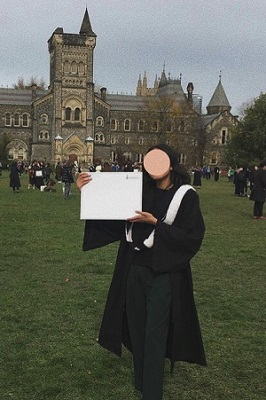

EDUCATION
I completed my undergraduate degree as a double major in Biodiversity & Conservation Biology going to go and then I can fill it in at another time. and Environmental Studies. Although these two majors fall into different areas of study, science and humanities respectively, there was a lot of overlap between core concepts. I think that taking them concurrently was a valuable experience in recognizing the ways that they rely on each other. The overlap made the learning process easier as it felt like a more holistic experience. This also allowed me view what I was learning in a way that was more applicable to the real world. Overall it was a challeging but great experience.
FAVOURITE ACADEMIC PROJECT
One of my favourite, and largest, projects I had the opportunity to complete during my time in school was a complete environmental assessment for Evergreen Brickworks. The focus of the assessment was reducing the amount of garbage waste that was produced during their weekend farmers market and other events on site. The solutions we created were directed at reducing the amount of waste created in two main ways. First from the vendors and the type of packaging there were distributing premade products in, and secondly in the form of labelling and access to recycling, foodwaste and garbage recepticles on sight. It involved primary research in the form of interviewing vendors and patrons. It was my first time taking on a project like this and happened in the last year of my studies so it was a nice way to use the skills I had learned and tie everything together. You can continue to the next page to learn more about my interests! CONTINUE